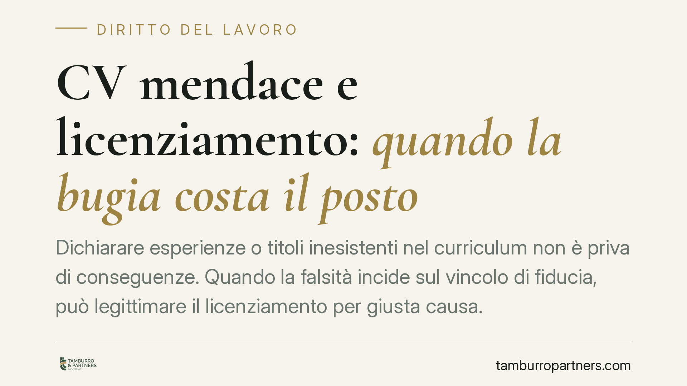

CV mendace e licenziamento: quando la bugia costa il posto
Dichiarare esperienze o titoli inesistenti nel curriculum non è priva di conseguenze. Quando la falsità incide sul vincolo di fiducia, può legittimare il licenziamento per giusta causa. Ma tra annullamento del contratto per dolo e sanzione disciplinare corrono differenze tecniche rilevanti, così come sul regime di tutela applicabile. Vediamo i confini e le cautele operative per chi assume e per chi è assunto.

Il caso di partenza
Un dipendente che, in fase di selezione, arricchisce il proprio curriculum con esperienze mai svolte o titoli mai conseguiti espone se stesso a un rischio concreto: la perdita del posto di lavoro.
Una recente pronuncia di merito attribuita al Tribunale di Roma (2025) si sarebbe mossa in questa direzione, confermando la legittimità del recesso quando la menzogna compromette la fiducia del datore. Segnaliamo però che gli estremi esatti della decisione (numero e data di deposito) non risultano al momento verificabili: il riferimento va quindi trattato con cautela e non come precedente consolidato.
Inquadramento normativo
Il perno è l'art. 2119 del codice civile, che consente il recesso senza preavviso in presenza di una "giusta causa", cioè di un fatto che non consente la prosecuzione, neppure provvisoria, del rapporto. Nel lavoro subordinato conta il vincolo fiduciario: se la condotta del lavoratore lede in modo irreparabile la fiducia del datore, il licenziamento può essere giustificato.
Occorre però tenere distinti due rimedi che spesso vengono confusi:
- Annullamento del contratto per dolo determinante (art. 1439 c.c.): opera quando i raggiri sono stati decisivi per il consenso, cioè senza quella falsità il datore non avrebbe assunto. È un rimedio contrattuale, che colpisce la genesi del rapporto.
- Licenziamento per giusta causa (art. 2119 c.c.): è un rimedio disciplinare, che presuppone un rapporto validamente sorto e ne dispone la cessazione per una condotta lesiva della fiducia.
Sono percorsi tecnicamente alternativi. Il primo mette in discussione la validità stessa del contratto; il secondo lo scioglie per un inadempimento. La scelta dipende dal ruolo che la falsità ha avuto nella decisione di assumere e dal momento in cui è stata scoperta.
Un chiarimento sul DPR 445/2000, spesso richiamato in modo improprio: quel testo disciplina le dichiarazioni sostitutive rese alla Pubblica Amministrazione o in procedure pubbliche (concorsi, appalti). Nel rapporto di lavoro privato non trova applicazione diretta: qui la falsità del curriculum rileva sul piano civilistico (dolo) e disciplinare (violazione degli obblighi di correttezza e buona fede, artt. 1175 e 1375 c.c.).
Non ogni imprecisione è giusta causa
La giurisprudenza applica il principio di proporzionalità. Non ogni inesattezza legittima il licenziamento.
Una cosa è dichiarare una laurea mai conseguita o un ruolo dirigenziale mai ricoperto, quando quel titolo era determinante per la mansione; altra cosa è un'imprecisione marginale su una data o su una qualifica secondaria, ininfluente sulle competenze effettivamente richieste. Solo le falsità determinanti, quelle che intaccano la fiducia in modo irrimediabile, giustificano il recesso in tronco.
Rileva anche il principio di immediatezza, che va calibrato sul momento della scoperta e non su quello dell'assunzione: la contestazione deve seguire senza ingiustificato ritardo il momento in cui il datore ha avuto piena conoscenza del fatto.
Il regime di tutela
Se il licenziamento è dichiarato illegittimo, le conseguenze dipendono dalla data di assunzione:
- per i rapporti sorti fino al 6 marzo 2015 si applica l'art. 18 della L. 300/1970, come modificato dalla riforma Fornero;
- per gli assunti dal 7 marzo 2015 opera il regime a tutele crescenti del D.Lgs. 23/2015, che privilegia la tutela indennitaria.
È una distinzione decisiva per stimare il rischio economico di un contenzioso.
Cosa cambia per il datore e per il lavoratore
Per l'azienda, la falsità del CV non autorizza un licenziamento automatico: serve un'istruttoria seria e una contestazione disciplinare formale. Per il lavoratore, la difesa passa dalla dimostrazione che la dichiarazione era marginale o non determinante, o dalla contestazione dei vizi procedurali.
Cosa fare in concreto
- Documenta la scoperta: annota data e modalità con cui è emersa la falsità, per rispettare il principio di immediatezza.
- Attiva la contestazione disciplinare: notifica un addebito specifico e circostanziato, concedendo al lavoratore il termine a difesa previsto dall'art. 7 dello Statuto.
- Valuta il rimedio corretto: verifica se la falsità era determinante per l'assunzione (possibile dolo ex art. 1439) o incide sulla prosecuzione del rapporto (giusta causa ex art. 2119).
- Applica la proporzionalità: distingui le menzogne rilevanti dalle imprecisioni marginali prima di procedere.
- Verifica il regime sanzionatorio: individua se si applica l'art. 18 L. 300/1970 o il D.Lgs. 23/2015 in base alla data di assunzione. È opportuno un vaglio legale preventivo prima del recesso.
Disclaimer
Contributo informativo a cura di Tamburro & Partners - Avv. Giuseppe Tamburro. Non costituisce parere legale.
Ogni storia di lavoro ha i suoi tempi.
Se gestisci HR e vuoi un confronto su contenzioso, ispezioni o licenziamenti, scrivi allo studio. Ti rispondiamo entro un giorno lavorativo.